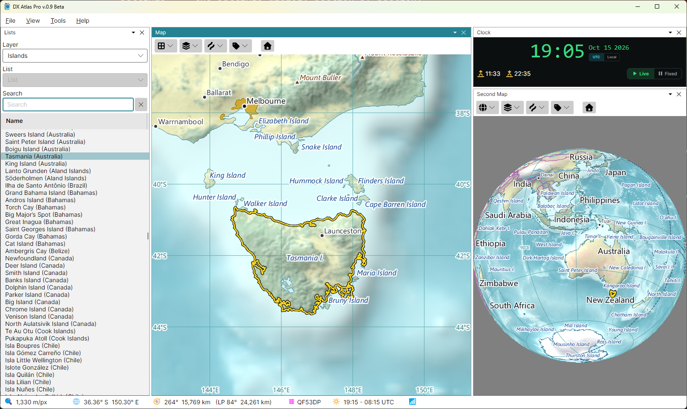
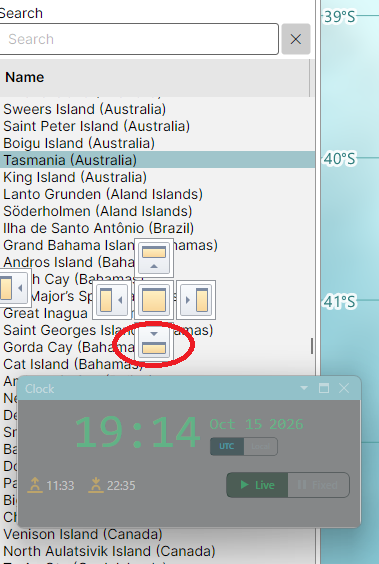

Window Layout

The main window holds the main menu at the top, the status bar at the bottom, and four panels between them:
- Lists - the layers of the map as lists of items, with search; see The Lists Panel;
- Map and Second Map - two independent map panels, each with its own toolbar, projection, centre, zoom and layers; see The Map;
- Clock - the current time, or a time of your choice for the gray line; see Clock and Fixed Time.
Showing and Hiding Panels
The View menu has a checkbox for each panel: tick it to show the panel, clear it to hide the panel. A panel can also be closed by the close button on its tab. When the program starts for the first time, the Lists panel and the Map are shown, and the Second Map and the Clock panel are hidden; show them with View > Second Map and View > Clock.
Closing a panel has these side effects:
- closing the Clock panel returns the clock to the computer's time, so the maps do not stay at a forgotten fixed time;
- closing the Lists panel removes the highlight, the pins and the award colouring from the maps, and showing it again puts them back.
The status bar is always shown.
Docking and Floating
Each panel can be docked - placed inside the main window, beside, above or below another panel, or on a tab in the same group as another panel - or floated in a window of its own.
Moving a Panel
To move a docked panel, drag its tab, the strip with its name at the top of the panel. To move a floating panel, drag the title bar of its window.
While you drag, docking targets appear over the panel under the mouse cursor: a cross of five buttons in the middle of that panel, and a button at the edge of the main window. Each button shows, in its picture, where the panel will go:
- the top, bottom, left and right buttons of the cross split the panel under the cursor, and put the dragged panel above it, below it, or beside it;
- the centre button puts the dragged panel on a tab in the same group as the panel under the cursor, so that the two take turns in the same place;
- a button at the edge of the main window docks the dragged panel along that whole edge.
What counts is where the mouse cursor is when you release the button, not where the dragged panel or its window is: move the cursor itself onto the target button. Releasing it anywhere else leaves the panel floating in a window of its own, which you can move to another monitor.
Example: the Clock Below the Lists
To dock the Clock panel below the Lists panel:
- show the Clock panel with View > Clock;
- drag the Clock panel by its tab, or by the title bar of its window if it is floating, over the Lists panel. The docking targets appear over the Lists panel;
- move the mouse cursor onto the bottom button of the cross, the one circled in the picture below, and release the mouse button.

The Lists panel is split in two, the list above and the Clock below.
Sizes and Saving
Drag the splitters between the panels to resize them. The layout, including the size and position of any floating window, is saved when the program closes and restored the next time it starts. To save several layouts and switch between them, use Named Views.
Themes
Tools > Theme switches the program between the Light and the Dark theme. The theme changes the menus, panels and dialogs; the map colours are set separately, in the Colors Dialog. The Clock panel is dark in either theme.